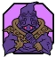

Refonte des indicateurs d'altération · 3 directions
Chaque carte (Stardust Dragon, image réelle YGOPRODeck) affiche les 6 altérations simultanément :
ATK boosté (2500→2800), DEF débuffé (2000→1300), Level +2, effet négué, attribut changé (WIND→DARK), race changée (Dragon→Spellcaster), compteur ×3.
L'ATK/DEF reste systématiquement en chip sous la carte (ton choix de positionnement).
Code en place aujourd'hui. Texte stroke noir + couleurs Material vert/rouge,
box noire pour level, pastille violette pour counter, attribut en cercle PNG-style.
Référence "avant".
6

3
2800/1300
5 styles de "box" hétérogènes, palette Material hors DS
B — Sigil System · recommandée
Chip unifiée gradient obsidian + bord gold soft. Variantes par sémantique :
gold (boost), ember (debuff), gris-bleu (neutre/négué),
violet-gold (counter). L'attribut changé est entouré d'un anneau gold pulsant
plutôt qu'une chip dédiée. ATK/DEF en pill obsidian sous-carte avec flèches ↑↓.
⊘
6
◆3
2800/1300
Système cohérent · 1 mixin chip · 4 accents sémantiques
C — Runestone · plus marquée
Sigils en hexagones gravés (clip-path), liseré gold marqué.
Le voile négué est strié diagonal plutôt que radial. ATK/DEF en stat-bar plein-largeur sous-carte.
Plus identitaire mais plus chargée — risque de dominer l'art si abusé.
6
⊘
◆3
2800
1300
Identité forte (hexagones) · risque de surcharge
D — Minimal · sobre (DS-conforme · tokens canoniques)
Monospace gris-gold. Gain = --cyan-300,
perte = --danger-light : ATK et level +N en bleu DS, DEF en rouge DS.
La couleur seule porte le sens (pas de flèche). Effet négué = overlay prod actuel (cercle barré centré).
Tous les hardcodes ont migré vers les tokens DS canoniques (--scrim-deep, --gold-soft-30, --text-*, --space-*, --radius-*, --elevation-*).
LV6 +2
◆ 3
2800/1300
Monospace · bleu (gain) / rouge (perte)
Comparatif côte à côte
Les 4 variantes alignées pour comparer le poids visuel relatif.